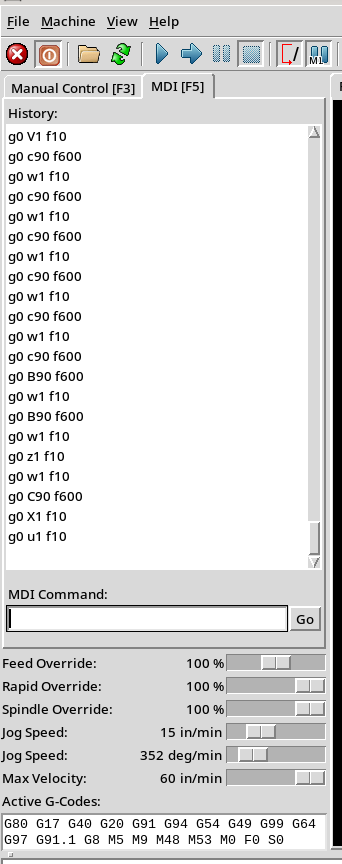

Running Gcode Commands
This is where gcode program commands can be entered manually, one line at a time.
In the picture to the right, the commands are entered in the field about ⅔ of the way down the screen, and has the title above it, MDI Command.
After you enter the gcode command you want to run, click Go.
Commands you have run before are shown in the History. The latest command run is at the bottom of the list. If you click on any entry, it will copy that entry into the MDI Command field. Then you can click Go to run that command. (You cannot double-click on an entry in the history and get it executed. You have to click on it, and then click Go.)
Jog Speed Sliders
The sliders below that field are used to override the values for the Manual Control / Jogging screen.
Modal Gcodes in Effect
Finally, this page also shows which modal G-codes are in effect. This is in the Active G-Codes: field at the bottom of the page.
See also, Gcode Quick Reference.
Accessing this Screen
You can either click on the tab, or use the F5 key to access this.